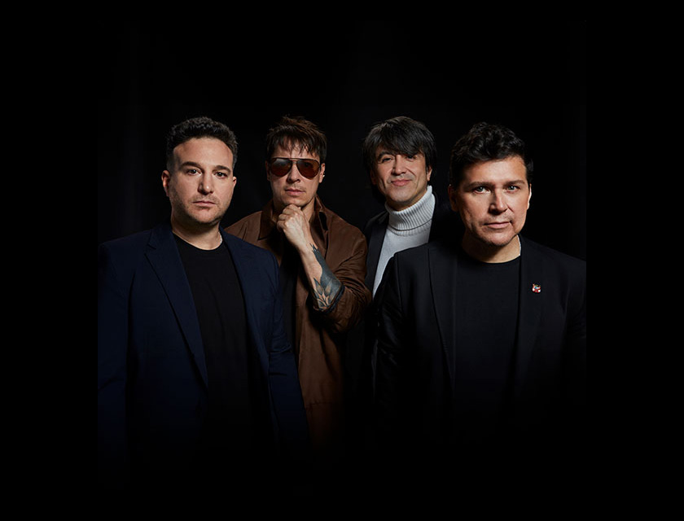
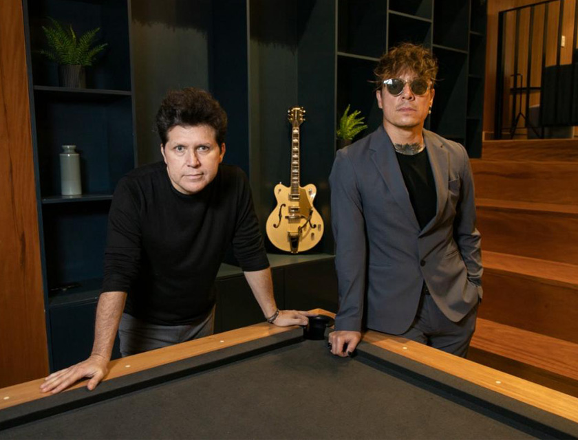
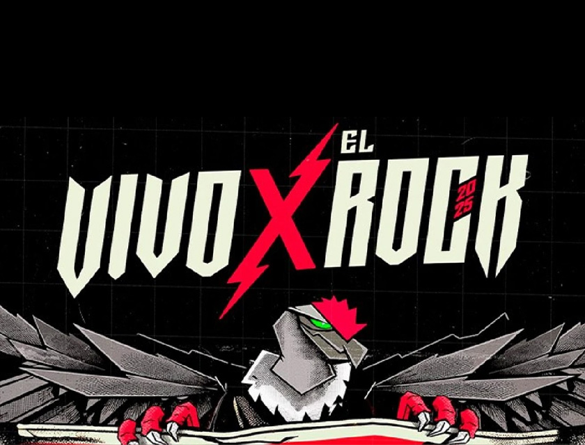

Pamela Franco y su nuevo rol en Puro Sentimiento
La cumbiambera ha sido tendencia por su ingreso a la orquesta “Puro Sentimiento” y el lanzamiento de su tema “Nadie sabe lo que tiene”.

Reencuentro caliente de Libido en Lima
La legendaria banda de rock regresó al Estadio Nacional y anunció su gira “La Reunion”, incluyendo presentaciones en Arequipa, Trujillo, Cusco, entre otras
Wendy Sulca reivindica sus raíces
La cantante, famosa por “La Tetita”, salió de la burla viral para convertirse en voz del orgullo indígena, mezclando huayno con pop y reggaetón, y denunciando el bullying cultural que sufrió
Tragedia en la cumbia
Paul Flores, “El Russo”, vocalista de Armonía 10, fue asesinado en un atentado cuando viajaba en autobús hacia Lima. El hecho ha desatado conmoción y exigencias por justicia, y reabrió el debate sobre la violencia en nuestro país
Pamela Franco vs. Magaly Medina
La cumbiambera lanzó su tema “Escándalo” con Christian Cueva usando una gráfica que Magaly acusó de plagio, ya que se parecía demasiado al estilo de su programa de TV. La “Urraca” explotó on air: “¡Copiones!”, dijo
Carlos Rincón hace grave denuncia contra Leslie Shaw
El compositor afirma que la cantante intentó frenar el lanzamiento de su nueva canción con Michelle Soifer y los Hermanos Yaipén, mientras ignora su reclamo por "Hay niveles"

Salim & Manolo rompen con Libido
El dúo formado por exmiembros de Libido, ahora conocidos como Salim & Manolo, debutó oficialmente en septiembre 2024 y en junio 2025 cambiaron su nombre a LBD, generando revuelo en la escena de rock nacional

Cambio de locación del Vivo X el Rock 2025 genera polémica
La organización del festival decidió moverlo del Estadio Nacional a Lurín Live por problemas con permisos y administración. Fans roqueros han cuestionado el transporte, las pulseras y la seguridad. ¿Será más cómodo o un caos en la Panamericana Sur?
Funas en la escena indie-rock local
Varios músicos del circuito indie rock en Lima han sido expuestos en redes por denuncias serias: desde agresión y amenazas hasta difusión de contenido íntimo, afectando la credibilidad de bandas emergentes. La “funa” fea incluye nombres como Mateo Novoa (Fiesta Bizarra) y otros implicados del mismo entorno